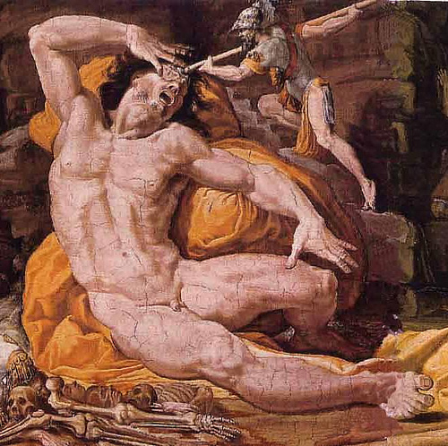
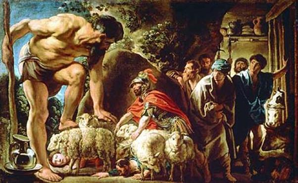

Đoàn thuyền của Ulysse gồm mười hai chiếc, chất đầy chiến lợi phẩm và lương thực rời thành Troie thuận buồm xuôi gió. Chẳng bao lâu họ tới xứ sở của những người Cicones. Một cuộc xung đột xảy ra khiến cho đội ngũ của Ulysse bị tổn thất mỗi thuyền sáu chiến sĩ, nhưng họ đã phá vây được và tiếp tục lên đường. Chẳng rõ đi được bao ngày trên mặt biển thì trời nổi bão. Đoàn thuyền vật lộn với sóng gió hết đợt này đến đợt khác. May thay, cơn bão không kéo dài nên cuối cùng khi trời yên biển lặng, kiểm điểm lại đội ngũ thì vẫn toàn vẹn, nhưng sóng gió của đại dương đã đưa đoàn chiến sĩ Hy Lạp trôi dạt đến một hòn đảo kỳ lạ, hòn đảo của người Lotophages. Ulysse cử ba chiến sĩ lên thăm đảo. Gặp khách lạ, những người Lotophages tiếp đãi rất niềm nở. Họ mời ba vị khách ăn hạt sen, một thứ hạt sen ngọt lịm như mật ong vàng, và họ chỉ có duy nhất món ăn ấy để mời khách vì họ vốn dĩ hoặc chưa biết đến việc trồng lúa mì nên chẳng biết ăn bánh mì, cả thịt cũng không. Nhưng tai hại thay thứ hạt sen của họ. Ba người bạn của Ulysse ăn xong và bỗng nhiên quên hết cả quê hương gia đình, vợ con thân thiết. Họ quên hết cả, cứ như là người chẳng có quê hương gia đình, chẳng có vợ con, chẳng có một ai thân thích để mà thương mà nhớ. Cả ba người không một ai nghĩ đến chuyện trở về nữa. Chờ mãi không thấy họ về, Ulysse phải huy động anh em đi tìm họ, nhưng họ cứ như người mất hồn ấy. Anh em đành phải bắt họ trói lại rồi khiêng họ chạy về thuyền. Ulysse ra lệnh cho đoàn thuyền nhổ neo ngay vì e rằng nếu nấn ná ở lại ắt lại có những người ăn phải thứ hạt sen nguy hiểm đó.
Đoàn thuyền ra đi, đi cho tới một hôm vào tận tối mịt thì đến một hòn đảo. Chờ cho qua đêm, sáng hôm sau Ulysse mới cùng anh em đổ bộ lên đảo để xem xét cảnh vật, tình hình. Đó là một hòn đảo hoang, cỏ cây um tùm, rậm rạp, dê rừng từng đàn chạy tung tăng, Ulysse thấy vậy liền ra lệnh cho anh em chia thành ba nhóm để săn. Nhờ vậy, đoàn thủy thủ của Ulysse chẳng phải dùng đến thức ăn dự trữ mà lại có một nguồn thức ăn vừa ngon vừa nhiều để bổ sung, tích trữ. Bữa chiều hôm ấy đang ăn uống ngon lành, mọi người bỗng nhìn thấy những làn khói xám bốc lên từ một hòn đảo cách đấy không xa, và cũng từ xa vẳng lại, mọi người để ý lắng nghe, thấy có tiếng người nói, tiếng dê kêu. Như vậy rõ ràng là hòn đảo đó có người, nhưng người ở đó là như thế nào? Họ có thể giúp đỡ gì cho đoàn thuyền Ulysse được không? Lương thực, nước ngọt? Họ có những vật phẩm gì quý báu để trao đổi, bày tỏ lòng quý người trọng khách không? Ulysse quyết định sẽ cùng anh em thủy thủ đi sang hòn đảo đó để thám hiểm.
Sáng hôm sau khi nàng Rạng đông vừa xòe những ngón tay hồng trên mặt trời, Ulysse liền tập hợp anh em lại cất tiếng nói:
- Hỡi anh em! Chúng ta đã đến một xứ sở lạ có tiếng người nói. Song chúng ta chẳng rõ họ là những người như thế nào? Sống thế nào? Họ hung dữ man rợ hay văn minh hữu ái? Họ giàu có hay nghèo nàn? Họ đã từng tiếp xúc với những người khách lạ từ phương xa tới với lòng nhân ái và thái độ chân thành, ưa chuộng lẽ phải, tôn kính thần linh hay họ chỉ là những con người sống cô quạnh, biệt lập hoang dã như những bầy thú rừng? Chúng ta chẳng nên bỏ qua mà không đến thăm hỏi, tìm hiểu. Vậy anh em hãy ở lại đây, còn chúng ta, một số người sẽ đi một con thuyền sang hòn đảo đó.
Thuyền cập bến, Ulysse chọn trong số thủy thủ lấy mười hai người dũng cảm nhất để cùng mình tiến sâu vào trong đảo. Những anh em khác ở lại lo việc giữ gìn con thuyền. Cuộc thám hiểm bắt đầu.
Đây là hòn đảo của những người khổng lồ, một giống người to lớn khác thường, cao ngất ngưởng như một ngọn núi. Những người Cyclopes sống biệt lập mỗi kẻ mỗi hang, không phải là người biết ăn bánh mì. Chúng sống bằng thịt và sữa của súc vật do chúng chăn nuôi được, trong một chiếc hang rộng lớn. Trong hang chúng ngăn ra một góc, lấy những phiến đá to rộng, chôn xuống đất, vây quanh làm chuồng. Vì sống quanh quẩn với đàn súc vật, nên những người Cyclopes chẳng biết đóng những con thuyền để vượt biển khơi mù xám, giao du, trao đổi với mọi người. Chúng cũng chẳng biết thờ cúng thần linh, hội họp với nhau bàn định công việc đặt ra luật pháp để điều hành cuộc sống. Ở cái xứ sở này thôi thì ai sống thế nào biết phần mình thế ấy, cứ cặm cụi thui thủi một mình, chẳng ai quan tâm chăm sóc đến ai, chẳng có chuyện gì để nói năng, thổ lộ với ai. Điều rất kỳ lạ là ngoài thân hình cao lớn khác thường, lông lá rậm rạp, những người Cyclopes lại chỉ có một mắt, một con mắt ở giữa trán, do đó nom chúng lại càng dữ tợn khủng khiếp.
Ulysse và mười hai chiến hữu đi vào hang một tên khổng lồ. Hắn bận đi chăm súc vật. Nhìn trong hang, Ulysse và anh em rất lấy làm ngạc nhiên trước cảnh những bình sữa đầy ắp và những tảng pho mát xếp thành hàng dài trên những tấm liếp. Một góc hang được ngăn ra thành chuồng nhốt súc vật. Trong chuồng lại chia ra từng khu nhỏ để nhốt các con lớn ra lớn, bé ra bé. Anh em ngỏ ý muốn xin Ulysse cho phép lấy pho mát và lùa đàn súc vật ra khỏi hang, đưa xuống thuyền, trở về, nhưng Ulysse quyết không nghe. Chàng muốn gặp chủ nhân của chiếc hang này để hỏi thăm tình hình, bày tỏ tấm lòng ưu ái, và chủ nhân sẽ trao tặng chàng và anh em những sản phẩm của mình để tỏ lòng hiếu khách. Chàng bảo anh em đốt lửa lên và ngồi quanh đống lửa cầu khấn thần linh, đợi chủ nhân chiếc hang trở về.
Chẳng phải chờ đợi lâu, chủ nhân của chiếc hang, không phải một con người bình thường như Ulysse và anh em thủy thủ. Gã khổng lồ Polyphème đã về. Hắn vác theo một bó củi khô to tướng. Vừa đến cửa hang, hắn lăng mạnh bó củi vào trong hang. Sợ hãi quá chừng, mọi người vội chạy dạt vào cuối hang để ẩn trốn. Sau đó hắn lùa đàn cừu cái, dê cái vào trong hang để vắt sữa, còn những con đực thì dồn vào khu chuồng ngoài cửa hang. Tiếp đó, sau khi vào hang, hắn nhấc một tảng đá to lớn có dễ đến hàng chục con ngựa cũng không kéo nổi, đóng chặt cửa hang lại. Xong xuôi, hắn vắt sữa cừu và dê, phần để cho sữa đông làm pho mát, phần để sữa vào những chiếc bình để khi uống cho tiện. Tiếp đó hắn khơi bếp lửa cho ngọn lửa hồng cháy to lên, và thế là hắn trông thấy Ulysse và anh em thủy thủ. Hắn liền cất tiếng nói ầm ầm như sóng biển, hỏi mọi người:
- Bớ này! Những tên lạ mặt kia! Các người là ai mà lại vào hang của ta khi ta vắng mặt? Các người từ nơi nào vượt biển tới xứ sở của người Cyclopes có con mắt tròn giữa trán này? Các người là những kẻ dùng thuyền vượt biển để đi buôn đi bán, trao đổi sản phẩm hay các người là những tên cướp biển lang thang trên sóng cả để gieo tai họa cho những người khác?
Mọi người đều khiếp đảm vì thân hình cao lớn và quái dị của hắn, vì tiếng nói ầm ầm của hắn, nhưng Ulysse trấn tĩnh lại, dõng dạc trả lời hắn như sau:
- Hỡi vị chủ nhân cao lớn của những bầy dê, cừu đông đúc! Chúng tôi là những người Achéens không may trên đường từ thành Troie trở về quê hương bị lạc bước đến đây. Sóng gió của biển khơi đã đưa chúng tôi đi phiêu dạt, trôi nổi không biết bao đêm ngày. Giờ đây chúng tôi đến xứ sở của người. Chúng tôi xin quỳ dưới chân ngài để cầu xin sự giúp đỡ. Hẳn rằng vì tục lệ quý người trọng khách cao quý và văn minh của chúng ta, ngài sẽ ban cho chúng tôi, những người khách bất hạnh, sự chăm sóc ân cần và chu đáo như thần Zeus hằng truyền dạy và mong muốn, và hơn nữa, chúng tôi sẽ được ngài ban cho những tặng vật để bày tỏ lòng hiếu khách. Chính thần Zeus tối cao là người lãnh sứ mạng trả thù cho những người cầu xin và những người khách bị bạc đãi. Chính Người là vị thần của lòng hiếu khách và Người luôn đi cùng với những người khách lạ vốn kính thờ Người.
Ulysse vừa nói xong thì tên khổng lồ đáp ngay bằng một giọng lạnh lùng và tàn nhẫn:
- Này, này... cái thằng lạ mặt kia, mày đúng là một thằng đần nếu không thì cũng là một thằng cha vơ chú váo từ nơi nảo nơi nào xa lắc xa lơ đặt bước đến đây. Có lẽ vì thế mày mới vẽ ra cái chuyện khuyên ta kính sợ thần linh và tránh làm phật ý các vị đó. Ta nói cho mày biết, những người Cyclopes không cần biết đến thần Zeus cầm cây vương trượng, cũng chẳng hề bận tâm đến các vị thần Cực lạc, bởi vì chúng tao về sức mạnh thì hơn hẳn và vượt xa bọn họ rất nhiều. Còn ta đây, Polyphème này, đâu có kể gì đến sự thù hằn ghét bỏ của Zeus. Ta sẽ chẳng sinh phúc tha cho mày và đồng bọn của mày mạng sống đâu. Ta sẽ ăn thịt tất cả bè lũ chúng mày, nhưng thôi này... hỡi tên lạ mặt kia! Thế khi mày đến đây thì mày buộc con thuyền vững chắc của mày ở đâu, ở cuối đảo hay ở gần đây? Ta muốn biết rõ điều đó.
Ulysse nhanh trí biết ngay ý đồ thâm độc của Polyphème muốn dò xét mình. Chàng bèn trả lời những lời bịa đặt khôn khéo:
- Ôi, thật bất hạnh cho chúng tôi! Con thuyền của chúng tôi đã bị thần Poséidon, người Lay chuyển Mặt đất quật vỡ tan tành. Từ ngoài khơi khi con thuyền đã gần cập bến nơi mũi đất hòn đảo của ngài thì gió nổi lên, quăng quật thuyền vào những tảng đá. Thuyền vỡ, nhưng may sao tôi và anh em thoát nạn.
Ulysse nói như vậy nhưng Polyphème chẳng nói chẳng rằng, xông ngay đến chỗ các bạn của Ulysse đưa bàn tay to lớn ra chộp liền một lúc hai người vung lên quật mạnh xuống đất. Sọ họ vỡ tan, óc vọt bắn tung tóe. Tiếp đó hắn chặt họ ra cho vào nồi nấu. Chỉ một chốc hắn bắc nồi ra, và thế là hắn đã ăn thịt hai người bạn của Ulysse ngốn ngấu ngon lành, ăn sạch sành sanh từ ruột gan tim phổi đến xương xẩu. Trong khi đó thì Ulysse và các bạn của chàng chỉ có mỗi một cách đối phó và ngồi im nhìn cảnh tượng thê thảm đau thương ấy, man rợ ấy mà tuôn trào nước mắt, mà lẩm nhẩm cầu khấn thần linh. Gã khổng lồ Polyphème sau khi nhồi nhét đầy bụng thịt người lại còn nốc thêm bao nhiêu là sữa đến nỗi hắn chỉ còn một việc nằm kềnh ra ở cuối hang, giữa những bầy súc vật của hắn mà ngủ. Ulysse căm thù tên khổng lồ man rợ, muốn lợi dụng tình thế thuận lợi này, rút gươm xông đến đâm cho hắn một nhát thấu suốt tim, nhưng một suy nghĩ đã ngăn tay chàng lại. Giết chết hắn rồi nhưng làm sao vần được tảng đá to lớn chặn ở cửa hang? Ta và anh em cũng sẽ chết khô chết mục ở trong hang này.
Và thế là một đêm trôi qua.
Sáng hôm sau, khi nàng Rạng đông chiếu rọi những tia nắng hồng làm chiếc hang sâu tăm tối sáng dần lên thì Polyphème cũng đã ngủ đẫy giấc, hắn dậy và đốt ngọn lửa hồng lên, vắt sữa cừu, sữa dê. Xong việc hắn lại xộc đến tóm hai người thủy thủ của Ulysse quật chết, nấu bữa ăn sáng. Ăn xong, hắn nhấc tảng đá chặn cửa hang ra, lùa đàn súc vật lên núi vừa đi vừa la hét om xòm.
Trong hang chỉ còn lại Ulysse và mấy anh em. Làm gì để thoát khỏi tai họa đang lơ lửng trên đầu mọi người? Chẳng nhẽ cứ ngồi bó gối ở đây để tên Polyphème thịt hết dần người này đến người khác? Ulysse tìm cách trả thù và vượt khỏi hang. Chàng cầu xin sự giúp đỡ của nữ thần Athéna, và nữ thần đã khơi lên trong trái tim chàng một ý đồ táo bạo. Ở trong hang của Polyphème có một cây gỗ dài và khá to. Đó là một thân cây ôliu dựng ở cạnh chuồng cừu. Polyphème đã đẵn nó khi còn tươi mang về chờ cho khô sẽ dùng. Cây gỗ dài khá to tưởng chừng như cột buồm của một chiếc thuyền lớn hai chục tay chèo. Ulysse liền bảo anh em đứng dậy và làm theo lệnh của mình. Chàng chặt một đoạn của thân cây giao cho anh em róc hết vỏ. Tiếp đó chàng đẽo nhọn một đầu rồi bảo anh em vùi cây vào bếp lửa cho khô nhựa săn gỗ. Xong việc phải dấu cây gỗ nhọn cho thật kín đáo dưới những lớp phân cừu dày phủ khắp nền hang. Cuối cùng, Ulysse rút thăm trong số tám bạn đồng hành còn lại để lấy bốn người. Bốn người với Ulysse là năm làm một việc vô cùng táo bạo và đầy nguy hiểm: lao cây gỗ vót nhọn vào con mắt độc nhất của Polyphème.
Chiều xuống, ánh sáng nhạt dần tên Polyphème trở về hang với đàn cừu, đàn dê đông đúc béo mập của hắn. Hắn chặn cửa hang lại với tảng đá to lớn phải đến hàng trăm người mới chuyển nổi. Hắn lại ngồi vắt sữa. Xong việc, hắn lại xộc đến bắt hai người bạn đồng hành của Ulysse quật chết, nấu bữa ăn chiều. Thế là mười hai anh em thủy thủ đi cùng với Ulysse nay chỉ còn có sáu.
Nhằm vào lúc Polyphème vừa ăn xong, Ulysse rót ra một bát rượu nho đen thẫm dâng lên mời tên khổng lồ man rợ. Chàng nói với hắn như sau:
- Hỡi ngài Polyphème thuộc dòng giống Cyclopes! Ngài đã xơi bữa cơm chiều với món thịt người rồi, bây giờ chúng tôi xin trân trọng mời ngài nếm thử thứ rượu nho này để ngài biết rượu chúng tôi ngon đến mức nào. Tôi mời ngài uống thử thứ rượu tuyệt diệu này với lòng mong muốn ngài sẽ rộng lượng thương cho số phận chúng tôi và cho phép chúng tôi được trở về quê hương gia đình. Quả thật sự tàn ác của ngài thật là man rợ và khủng khiếp. Loài người sẽ không một ai dám bén mảng đến xứ sở này để thăm hỏi ngài nữa.
Đến đây ta phải dừng lại một chút để kể về thứ rượu nho mà Ulysse dâng cho Polyphème uống. Đây là một thứ rượu nho có một không hai trên mặt đất này, quà tặng của lão vương Maron người thờ phụng thần Apollon, vốn là cháu của thần Rượu nho-Dionysos. Ông cụ làm nghề tư tế này sống trong từng với gia đình bên ngôi miếu thờ vị thần Ánh sáng có cây cung bạc và những mũi tên vàng. Xưa kia trong một cuộc giao tranh ở đất Troie gần đô thành Ismaros, gia đình cụ Maron bị đoàn quân của Ulysse bắt làm tù binh. Tôn trọng thánh thần, kính nể người làm nghề tư tế, Ulysse đã phóng thích cho gia đình cụ. Đền đáp lại ân nghĩa đó, Maron trao tặng cho Ulysse nhiều vật phẩm quý giá, trong số đó có mười hai vò rượu. Thứ rượu này ngoài Maron, vợ với một bà quản gia ra thì trong nhà, kể từ con trai cho đến đám gia nhân tin cẩn, không một ai được biết đến. Khi uống chỉ cần lấy một cốc nhỏ rồi đem pha với hai mươi cốc nước, vậy mà rượu đã bốc mùi thơm ngào ngạt, uống vào ngọt lịm êm ru song say lúc nào không biết. Đấy chính là thứ rượu nho tuyệt diệu, cực kỳ hiếm quý, sản phẩm của thánh thần đựng ở mười hai vò ấy mà Ulysse đã lấy ra mang đi, mang đi chỉ có một bình da dê, và giờ đây chàng đã rót ra mời Polyphème. Polyphème đón lấy bát rượu uống một hơi sạch, rồi một tay đưa lên quệt ngang miệng, một tay chìa bát cho Ulysse nói:
- Ôi chà... chà! Rượu thế mới là rượu! Nhà ngươi vui lòng cho ta bát nữa đi. À mà người tên là gì nhỉ, nói ngay cho ta biết đi. Ta sẽ tặng ngươi một đặc ân để tỏ lòng hiếu khách. Người Cyclopes chúng ta cũng đã biết đến rượu, nhưng rượu của nhà ngươi thật tuyệt diệu.
Ulysse lại rót cho Polyphème bát nữa. Cũng như lần trước Polyphème nốc cạn và ngu ngốc thay, ba lần Ulysse rót rượu thì cả ba lần Polyphème đều uống một hơi hết sạch. Hắn đã bắt đầu thấm rượu rồi. Bấy giờ Ulysse mới cất tiếng trả lời câu hỏi của hắn lúc nãy.
- Hỡi ngài Polyphème to lớn, vừa rồi ngài tỏ ý muốn biết tên tuổi quang vinh của tôi, vậy tôi xin phép được xưng danh, nhưng về phần ngài, dù sao ngài cũng nên ban cho tôi một tặng vật để tỏ lòng hiếu khách như ngài vừa mới nhắc chứ! Tôi chắc ngài sẽ không quên. Tên tôi là: Chẳng Có Ai. Cha mẹ tôi và anh em bạn hữu của tôi đều gọi tôi là thằng Chẳng Có Ai.
Ulysse nói xong, Polyphème đáp lại bằng một giọng lạnh lùng, tàn nhẫn:
- Này... Này... Chẳng Có Ai nghe đây. Ta sẽ ăn thịt nhà ngươi cuối cùng sau khi các bạn ngươi không còn đứa nào để thịt nữa. Đó là tặng phẩm của ta để tỏ lòng mến khách!
Nói xong hắn lảo đảo chuệnh choạng rồi nằm vật xuống đất, mặt tái đi, mắt đờ ra. Bỗng hắn ngóc đầu dậy, ợ ợ mấy tiếng rồi nôn thốc nôn tháo rượu, thịt người vung vãi lênh láng khắp cả trên nền hang. Polyphème đã say quá. Nôn được một cái nhẹ cả người, hắn lăn ra ngủ, ngủ như chết.
Ulysse lập tức cùng anh em vùi chiếc cọc nhọn vào bếp lửa khi chiếc cọc nhọn đã bốc cháy đỏ rực, Ulysse lôi nó ra và chàng cùng với anh em khiêng nó đến bên gã khổng lồ Polyphème, không một hiệu lệnh nhưng mọi người đều hành động nhịp nhàng và ăn khớp với nhau. Chiếc cọc được đung đưa hai nhịp để lấy đà. Đến nhịp thứ ba nó lao thẳng vào con mắt độc nhất của gã khổng lồ. Ulysse cố dùng hết sức để xoáy chiếc cọc. Chiếc cọc nóng bỏng xoáy sâu vào con mắt độc nhất của Polyphème. Máu vọt ra. Con ngươi và lông mi cháy gặp máu rít lên những tiếng xèo xèo như sắt nung trong lò rèn đem nhúng vào nước lạnh.
Polyphème thét lên một tiếng khủng khiếp. Tiếng thét như sấm đập vào vách vang rền rĩ, vang vọng ra khắp xung quanh nghe rùng mình sởn gáy. Lập tức cả năm người chạy giạt vào một góc hang. Polyphème rút chiếc cọc nóng bỏng đẫm máu ra khỏi tròng mắt lẳng mạnh đi. Hắn loạng choạng đứng dậy, gào thét, gọi tên những gã Cyclopes ở hang lân cận. Nghe tiếng gọi, các gã khổng lồ thuộc dòng giống Cyclopes vội chạy đến đứng xa xa vây trước cửa hang, cất tiếng nói như sấm, hỏi:
- Này hỡi Polyphème! Làm sao đêm hôm khuya khoắt mà anh lại thét chúng ta kinh khủng như thế? Anh đã đánh thức chúng tôi dậy vì chuyện gì thế? Phải chăng có kẻ nào dùng mưu lừa anh hoặc dùng sức mạnh đánh anh để cướp đàn súc vật béo mập của anh?

Từ cuối hang, Polyphème rên rỉ trả lời:
- Các bạn ơi! Kẻ nào cưỡng bức tôi, cướp đàn súc vật của tôi ư? Không! Không phải đâu! Chẳng Có Ai dùng mưu hại tôi chứ không dùng sức mạnh cưỡng bức tôi.
Nghe Polyphème nói, lũ khổng lồ ngu ngốc đứng ngoài cửa hang xôn xao bàn tán. Một tên nói to lên rằng:
- Hỡi ôi! Polyphème! Nếu chẳng có ai dùng sức mạnh ám hại anh, không có ai dùng mưu lừa lọc anh thì chắc là anh bị mê hoảng hay mắc phải một bệnh gì đó rồi. Những cơn mê hoảng và bệnh tật là do thần Zeus đấng chí cao điều khiển thế giới gây nên. Chẳng có ai tránh khỏi bệnh tật cả. Thôi, thôi chúng tôi về ngủ đây để mai còn phải đi chăn súc vật từ sớm. Anh hãy cầu khẩn thân phụ của chúng ta, vị thần Đại dương-Poséidon, người Lay chuyển Mặt đất, phù hộ cho anh tai qua nạn khỏi!
Nói xong, bọn Cyclopes kéo nhau ra về. Ulysse mừng thầm vì thấy cái tên bịa đặt và mưu kế của mình đã lừa được chúng.
Tên khổng lồ Polyphème không ngớt miệng rên rỉ vì đau đớn. Hắn loạng choạng sờ sẫm đi ra cửa hang. Hắn nhấc tảng đá chắn cửa hang ra rồi ngồi chắn ngang lối ra vào. Hắn đưa tay rình đón bắt lũ người đã chọc mù con mắt độc nhất của hắn nếu như bọn chúng định thoát ra khỏi hang. Thấy vậy, Ulysse suy tính chỉ còn cách thoát ra khỏi hang tốt nhất. Đó là: lấy dây miên liễu buộc ba con cừu lại với nhau, buộc một người vào con cừu giữa, còn hai con kèm hai bên để che chở. Cứ thế ba con mang một người. Còn Ulysse chọn một con cừu to lớn nhất nằm dưới bụng nó, tay bám chắc vào bộ lông dày của nó.
Công việc được tiến hành khẩn trương và lặng lẽ. Cho đến khi nàng Rạng đông vừa xòe những ngón tay hồng xua bóng đen âm u của đêm tối, khi chim chóc ríu rít gọi nhau đi kiếm mồi thì tên Polyphème thả đàn cừu đi ăn. Hắn ngồi ở cửa hang sờ nắn lưng từng con vật, nhưng hắn có biết đâu, những con người mà hắn rình bắt lại nằm dưới bụng cừu. Con cừu mang Ulysse ra sau cùng. Tên Polyphème sờ nắn vuốt ve nó. Hắn lại còn than vãn ước gì chú cừu yêu quý mách bảo cho hắn biết cái thằng Chẳng Có Ai trốn ở đâu để bắt nó phải đền tội.

Nói chuyện với con cừu một hồi lâu, Polyphème đẩy con vật ra khỏi hang. Để cho con vật đi khỏi hang một quãng xa, Ulysse mới rời khỏi bụng cừu. Chàng cởi dây cho anh em. Thế là thoát nạn. Không để mất thời gian, Ulysse ra lệnh cho anh em xua đàn cừu ra ngoài biển, nơi thuyền đậu. Anh em coi giữ thuyền thấy Ulysse và các chiến hữu trở về lòng vô cùng mừng rỡ. Song khi thấy vắng mặt nửa số người ra đi thì hết thảy đều ngậm ngùi thương xót. Nhiều người khóc than vật vã. Ulysse cau mày tỏ ý không hài lòng, vì theo chàng bây giờ chưa phải là lúc khóc than bởi tai họa vẫn đang đe dọa, cẩn phải tỉnh táo và nén nỗi đau thương của mình lại. Chàng ra lệnh cho mọi người phải lùa mau đàn cừu xuống thuyền và rời bến. Con thuyền của Ulysse rời hòn đảo của những người khổng lồ Cyclopes chưa bao xa thì Ulysse đứng ra trước mũi thuyền, quay mặt lại nói vọng vào bờ:
- Hỡi tên Polyphème man rợ! Mi hãy dỏng tai lên mà nghe ta nói. Mi đã phạm tội ác tày trời: ăn thịt ngay những người khách đến thăm mi. Bọn ta đâu có phải là những kẻ tầm thường, ngu ngốc và hèn nhát, mi đã bị trừng phạt đích đáng. Đấy chính là ý của thần Zeus và các vị thần Olympe đấy!
Ulysse đã nói bằng tất cả sức lực của mình để cho Polyphème nghe thấy. Từ trên núi cao Polyphème nghe rõ. Thế là cái thằng Chẳng Có Ai chọc mù mắt hắn đã trốn thoát, mà lạ lùng thật? Hắn trốn thoát ra khỏi hang bằng cách nào mới được chứ! Polyphème tức điên người. Gã đứng bật dậy bửa luôn một tảng đá vô cùng to lớn ở một ngọn núi như ta bẻ gãy một ngọn cây, ném đánh vèo một cái về phía Ulysse. Khối đá bay vượt qua con thuyền và rơi cách mũi thuyền một quãng. Sóng dội lên như một cơn bão ập đến đẩy con thuyền vào tận gần bờ.
Ulysse vội lấy sào đẩy thuyền ra và cổ vũ anh em thủy thủ ra sức chèo mạnh, chèo mau để thoát khỏi vòng nguy hiểm. Đi được một quãng xa gấp đôi lần trước, Ulysse lại đứng lên trước mũi thuyền, hét to lên:
- Hỡi tên Polyphème man rợ. Nếu có người nào đến thăm hỏi mi, muốn biết ai là người gây ra nỗi bất hạnh cho mi, chọc mù con mắt độc nhất của mi thì mi hãy trả lời: Đó là Ulysse, người anh hùng đã triệt hạ thành Troie, con trai của lão vương Laerte, quê hương ở hòn đảo Ithaque bốn bề sóng vỗ quanh năm... Mi hãy trả lời như thế để cho danh tiếng của ta càng thêm lẫy lừng, để cho ai cũng biết: người anh hùng Ulysse có nghìn mưu kế quyết không bao giờ chịu bó tay khuất phục trước mọi tình thế hiểm nghèo. Ta truyền đời cho mi biết, mi bị mù hẳn rồi, ngay thân phụ của mi là vị thần Poséidon đầy quyền thế cũng không có cách gì chữa khỏi cho mi. Mi đừng có trông chờ, hy vọng mà uổng công, vô ích. Ta chỉ tiếc rằng ta không giết chết được mi để trả thù cho các bạn của ta đã bị mi ăn thịt một cách vô cùng hèn hạ.
Polyphème nghe những lời nói đó tức giận đến điên đầu, sôi máu. Gã gầm lên nguyền rủa Ulysse bằng mọi lời độc địa. Ulysse lại trêu tức hắn thêm. Thế là hắn quỳ xuống giơ hai tay lên trời cầu khấn thần Poséidon, vị thần có cây đinh ba gây bão tố.
- Hỡi thần Poséidon vị thần Lay chuyển Mặt đất! Nếu người đích thực là cha đẻ của con thì xin Người hãy trừng phạt tên Ulysse, sao cho hắn không trở về được quê hương của hắn, nhưng nếu số mệnh vẫn cho hắn trở về được với những người thân yêu của hắn, trở về được với mái nhà cao cao có làn khói biếc lượn lờ của hắn thì xin Người bắt hắn phải chịu vô vàn tai họa, ba chìm bảy nổi lênh đênh phiêu bạt trên đại dương hết năm này qua năm khác, mất dần hết đồng đội rồi mới trở về được đến quê hương...
Polyphème cầu khấn xong lại bửa phăng khối đá có dễ còn to lớn gấp mấy lần khối đá trước, lấy hết sức lực ném thật mạnh về phía con thuyền. Khối đá bay đi và rơi về phía sau con thuyền suýt nữa là rơi vào bánh lái. Một ngọn sóng to dâng lên đẩy mạnh con thuyền đi, đẩy xa đến nỗi đưa con thuyền về gần đến bờ của hòn đảo nơi đoàn thuyền neo đậu.
Thế là cuộc thám hiểm hòn đảo có tiếng người nói do Ulysse khởi xướng đã phát hiện ra xứ sở của những người khổng lồ Cyclopes. Nhờ mưu trí của Ulysse, đoàn thuyền thám hiểm mặc dù bị tổn thất mất sáu người, cuối cùng đã trở về được với đoàn thuyền để tiếp tục cuộc hành trình về quê hương Hy Lạp.
Một chặng đường với biết bao thử thách hiểm nghèo đang chờ đón, thử thách mọi người.